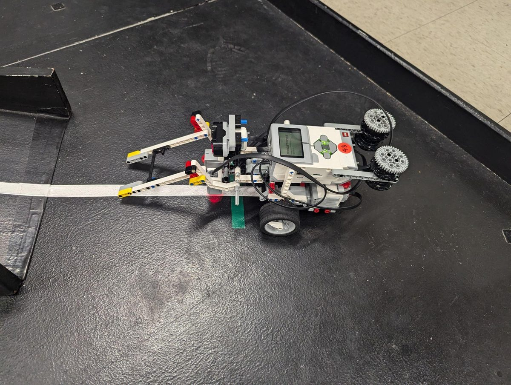
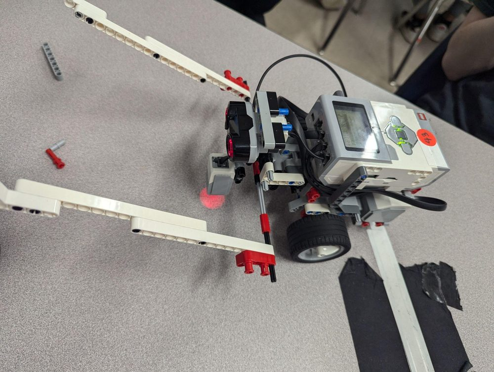
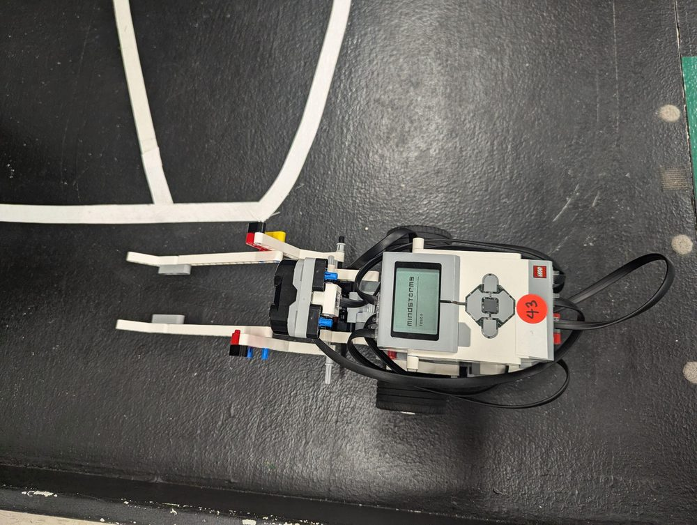
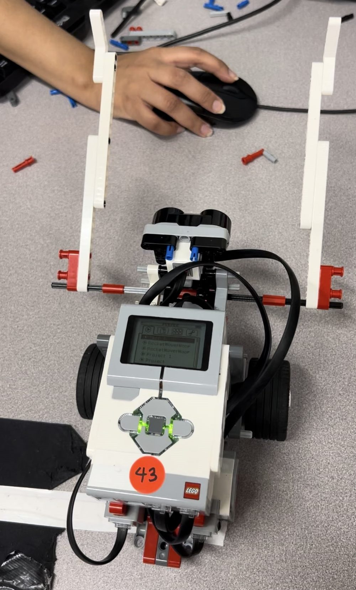
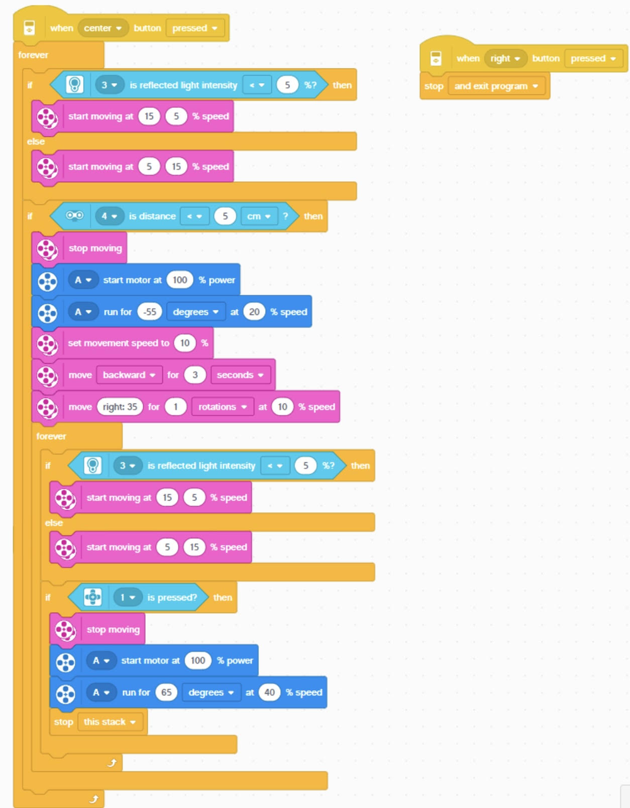

Line-Following Rod Retrieval Robot
The robot had to follow a white line, pick up at least 3 of 4 rods from a storage area, and deliver them past a blue “tunnel” into the red box at the end of the track. Our team had no fixed roles. Everyone contributed to both building and programming the robot.
- Course
- MAE 1107 Intro to Mechanical and Aerospace Engineering, UT Arlington
- Team
- 5 students; everyone worked on both the build and the code
- Tools
- LEGO Mindstorms EV3, block-based programming
- Timeline
- Oct. 21 – Nov. 11, 2024 (4 class days)

How it works
- Line following: a light sensor reads black or white and the robot turns left or right as it moves forward, so it keeps correcting back onto the line.
- Pickup: when the front sensor detects the robot is within 5 cm of the wall at the storage area, it raises the lift to take the rods, backs up along the line, and moves right until it finds the line that leads to the tunnel.
- Delivery: it resumes line following to the end, and a button press makes it stop and drop the rods into the box.
Problems we solved
- Line following didn’t work at first. We moved the light sensor and changed how it interpreted reflected light.
- Forever blocks could trap the program in a loop instead of moving to the next step, which we had to work around.
- Lift versus sensor: early lift designs were large enough to block the distance sensor, making the robot think it was next to a wall. We built a smaller, wider lift, trading some stability for correct sensing.
- Arms: arms spread wide kept hitting the legs of the table holding the rods, so we brought them close together, removed the angled LEGO pieces at the tips, and added weight at the end.



Program

Results and what we’d improve
The robot completed the course: it followed the line, picked up the rods, passed through the tunnel, and delivered them. Given more time and parts, we would:
- Drive straight when on the line and turn only when it drifts, for smoother travel (it struggled to enter the storage area smoothly every time).
- Detect the drop-off automatically instead of using a button, and add a wave-to-start.
- Build a longer, sturdier lift. We were limited to the LEGO parts provided and a strict time limit.